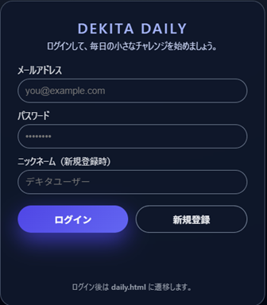
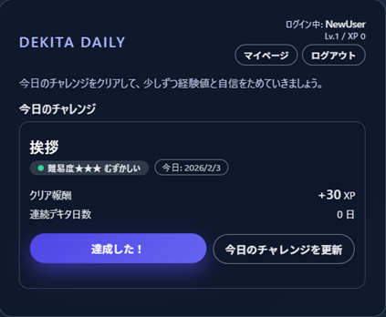
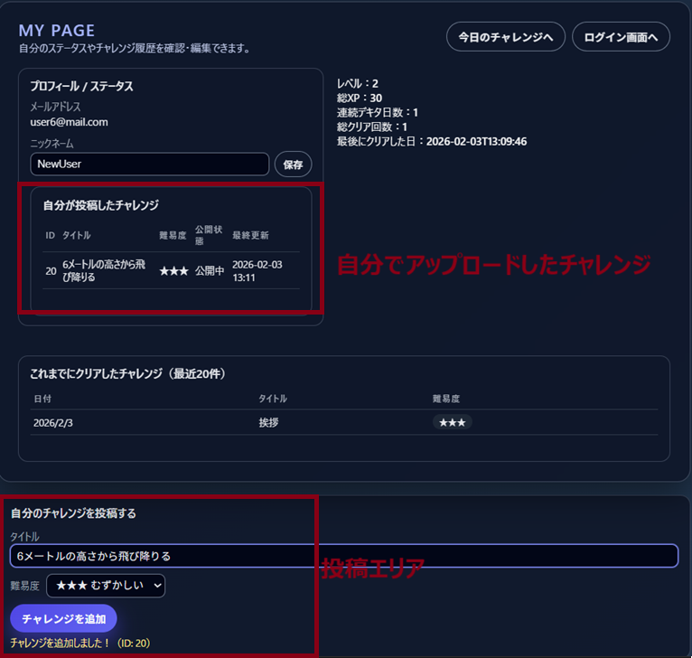
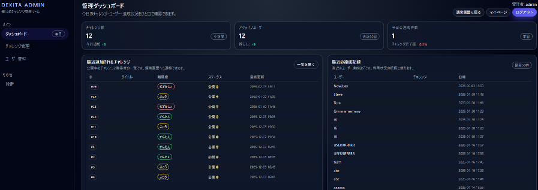
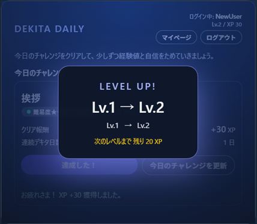

作品概要
開発目的
習慣化が続かない原因として「何をするか迷う」「達成感が見えない」点に着目し、 無理なく継続できる仕組みを目指して開発しました。
ターゲットユーザー
- 新しい習慣を身につけたいが、三日坊主になりやすい学生・社会人
- 行動を始める前に迷って止まってしまう人
- Webアプリで日々の行動を記録したい人
主要機能

① ログイン / 新規登録
メールアドレスとパスワードで認証し、初回はニックネームを設定して登録します。

② 今日のチャレンジ / 達成
当日のチャレンジを提示し、「達成した！」で記録。XPが加算されます。

③ マイページ / 履歴管理
レベル、累計XP、連続達成日数、達成履歴を確認できます。
④ チャレンジ投稿（即時反映）
ユーザーが新しいチャレンジを投稿でき、内容は即時に反映されます。

⑤ 管理者機能
管理画面でチャレンジやユーザー情報を確認・管理できます。

⑥ レベルアップ演出
達成時に演出を表示し、達成感を視覚的に伝える工夫を行いました。
システム構成
使用技術
- フロントエンド：HTML / CSS / JavaScript
- バックエンド：Java（Servlet）
- データベース：MySQL
処理の流れ
- View（JSP/HTML）： ユーザー操作 → HTTPリクエスト送信
- Controller（Servlet）： リクエスト受信 → ビジネスロジック実行
- Model（Bean）： 処理に必要なデータをJavaBeanとして保持
- DAO： JDBCを使用してMySQLに接続し、データの取得・更新を行う
- View（JSP）： データを動的に表示 → レスポンス返却
リンク
- GitHub（ソースコード）： jerrycai88/dekita-daily-challenge
- 作品説明PDF： PDFを開く